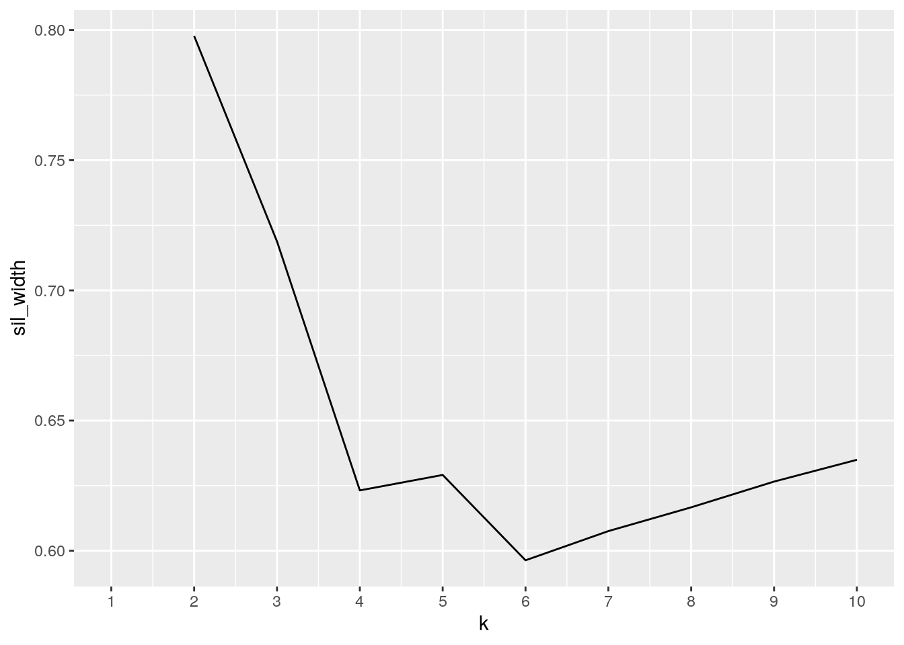

October 17, 2020
Kathy Wang
0. Introduction
For this project the datasets that will be explored contain data for the Austin Animal Center Shelter and the cases and fatalities by COVID-19 in Texas. The Austin Animal Center Shelter dataset was obtained by the Austin government's data portal (data.austintexas.gov), and contains the "outcomes of animals"(where they ended up) that were at the center. The date of the outcome, what the outcome was, and the name, ID, age, species, color, and sex of the animals are included. The COVID-19 datasets was obtained by the Texas Department of State Health Services (dshs.texas.gov) and includes all of the Texas counties and the number of cases and fatalities in each county by COVID-19 overtime (by day).
I chose these datasets to see if the pandemic and the quarantine had an effect on the adoptions of animals from the shelter in any way. COVID-19 data in Travis County will be the focus in this project, as the Austin Animal Center Shelter is mainly focused in that county. I expect that there may be an increase in the number of animals adopted and perhaps less discretion in the age of the animal adopted as the quarantine went on. People are at home and may desire a companion more than before the quarantine, and I want to see if these datasets can offer some insight to that.
1. Tidying
library(tidyverse)## ── Attaching packages ───────────────────────────────────────────────────────────────────────────────────────────── tidyverse 1.3.0 ──## ✓ ggplot2 3.3.2 ✓ purrr 0.3.4
## ✓ tibble 3.0.3 ✓ dplyr 1.0.1
## ✓ tidyr 1.1.1 ✓ stringr 1.4.0
## ✓ readr 1.3.1 ✓ forcats 0.5.0## ── Conflicts ──────────────────────────────────────────────────────────────────────────────────────────────── tidyverse_conflicts() ──
## x dplyr::filter() masks stats::filter()
## x dplyr::lag() masks stats::lag()options(dplyr.summarise.inform = FALSE)
#Load in datasets.
shelter_all <- read.csv("https://drive.google.com/uc?export=download&id=1278cBre_l36-M_WUj8Bd66xrUywn-E0b")
case_all <- read.csv("https://drive.google.com/uc?export=download&id=1bPA8x057sCMny5p4aon1Y1f9KP6hRZvj")
fatality_all <- read.csv("https://drive.google.com/uc?export=download&id=1IOHv2xxsxXODJ7C2uYyWFWIH0xFyQ5Qt")#Tidy the case dataset so that it shows only the cases in Travis county, by month and day.
case<- case_all %>% filter(County.Name=="Travis")
case<- case %>%pivot_longer(contains("Cases"), names_to="date", values_to="cases") %>% separate(date, into=c("type","month","day"), convert=T)%>% select(-("type")) ## Warning: Expected 3 pieces. Additional pieces discarded in 1 rows [131].#Tidy the fatality dataset so that it shows only the fatalities in Travis county, by month and day.
fatality<- fatality_all %>% filter(County.Name=="TRAVIS")
fatality<- fatality %>%pivot_longer(contains("Fatalities"), names_to="date", values_to="fatalities")%>% separate(date, into=c("type","month","day"), convert=T)%>% select(-("type"))
glimpse(case)## Rows: 219
## Columns: 4
## $ County.Name <fct> Travis, Travis, Travis, Travis, Travis, Travis, Travis, T…
## $ month <int> 3, 3, 3, 3, 3, 3, 3, 3, 3, 3, 3, 3, 3, 3, 3, 3, 3, 3, 3, …
## $ day <int> 4, 5, 6, 9, 10, 11, 12, 13, 15, 16, 17, 18, 19, 20, 21, 2…
## $ cases <int> 0, 0, 0, 0, 0, 0, 0, 0, 2, 2, 3, 4, 7, 21, 22, 22, 22, 79…glimpse(fatality)## Rows: 218
## Columns: 4
## $ County.Name <fct> TRAVIS, TRAVIS, TRAVIS, TRAVIS, TRAVIS, TRAVIS, TRAVIS, T…
## $ month <int> 3, 3, 3, 3, 3, 3, 3, 3, 3, 3, 3, 3, 3, 3, 3, 3, 3, 3, 3, …
## $ day <int> 7, 8, 9, 10, 11, 12, 13, 14, 15, 16, 17, 18, 19, 20, 21, …
## $ fatalities <int> 0, 0, 0, 0, 0, 0, 0, 0, 0, 0, 0, 0, 0, 0, 0, 0, 0, 0, 0, …Dataset with the number of COVID cases in Texas was filtered to only have the cases in Travis County, which includes Austin and the Austin animal shelter. The columns were originally organized by each day and how many cases, so these were pivoted all into two columns representing the month and day. These same changes were applied to the dataset with the fatalities as it also had a similar initial format. The warning of "Expected 3 pieces.Additional pieces discarded in 1 rows [131]" can be ignored here, as that particular observation had an extra value not needed here.
#Tidy the shelter dataset. Drop the MonthYear column because it is a duplicate of DateTime.
#Remove all animals whose outcome was before 2019.
shelter<- shelter_all %>%separate(DateTime, into= c("date", "time", "type"), sep=" ") %>% select(-c(MonthYear, time, type)) %>% separate(date, into=c("month", "day","year"), convert=T) %>%filter(year==c(2019,2020)) %>%arrange(year, month, day)
#adjust the age column so that it shows only by months old. Needs different calculation for day and year observations. Used 30 days for a month.
shelter<-shelter %>% separate(Age.upon.Outcome, into=c("age","type")) ## Warning: Expected 2 pieces. Missing pieces filled with `NA` in 1 rows [13613].shelter$age= as.double(shelter$age)## Warning: NAs introduced by coercionshelter<- shelter%>%mutate (age= ifelse(type=="year"|type=="years", age*12, age)) %>% mutate (age= ifelse(type=="day"|type=="days", age/30, age)) %>% mutate (age= ifelse(type=="week"|type=="weeks", age/4, age)) %>%select(-("type"))
glimpse(shelter)## Rows: 13,659
## Columns: 13
## $ Animal.ID <fct> A786743, A786759, A786757, A786634, A771004, A786477…
## $ Name <fct> Mia, Calypso, , , Dippy, , , Coco, Frank, , Emily, ,…
## $ month <int> 1, 1, 1, 1, 1, 1, 1, 1, 1, 1, 1, 1, 1, 1, 1, 1, 1, 1…
## $ day <int> 1, 1, 1, 1, 1, 1, 1, 2, 2, 2, 2, 2, 2, 2, 2, 2, 2, 2…
## $ year <int> 2019, 2019, 2019, 2019, 2019, 2019, 2019, 2019, 2019…
## $ Date.of.Birth <fct> 12/31/2016, 01/01/2014, 12/31/2017, 02/28/2018, 04/2…
## $ Outcome.Type <fct> Return to Owner, Return to Owner, Euthanasia, Transf…
## $ Outcome.Subtype <fct> , , Rabies Risk, Snr, , Snr, Partner, , , , , Partne…
## $ Animal.Type <fct> Dog, Dog, Other, Cat, Dog, Cat, Cat, Dog, Dog, Dog, …
## $ Sex.upon.Outcome <fct> Intact Female, Spayed Female, Unknown, Intact Female…
## $ age <dbl> 24, 60, 12, 10, 84, 12, 24, 24, 11, 2, 168, 4, 8, 16…
## $ Breed <fct> German Shepherd Mix, Border Collie/German Shepherd, …
## $ Color <fct> Brown/Tan, Black/Brown, Brown, Tortie, Black/Brown, …The dataset with each animal in the shelter that had an outcome was tidied to only include animal observations from 2019 and onwards (up to October 11, 2020). This was to compare the shelter data from before the COVID outbreak had hit. The date of outcome variable was seperated and the time of day value dropped (it was not of interest here). It was then redefined into month and day of outcome. The age of the animal was adjusted to be in months units for all observations. NA values appeared for 1 animal that did not have age listed, and they were kept in the data because the date of their outcome was also of interest.
2. Joining
#Join all 3 datasets by date and drop county name duplicates.
temp<- fatality %>%full_join(case, by=c("month","day")) %>% select(-("County.Name.y")) %>% rename(county=County.Name.x)
#Must add 2020 year to temp since there is data in the shelter dataset in yr 2019, and needs to join.
temp["year"]<-2020
full_animal<- shelter %>% full_join(temp, by=c("month","day","year"))
#Set all NA values in cases and fatilities to 0 and TRAVIS county.
full_animal$fatalities[is.na(full_animal$fatalities)]<-0
full_animal$cases[is.na(full_animal$cases)] <-0
full_animal$county[is.na(full_animal$county)]<- "TRAVIS"
glimpse(full_animal)## Rows: 13,660
## Columns: 16
## $ Animal.ID <fct> A786743, A786759, A786757, A786634, A771004, A786477…
## $ Name <fct> Mia, Calypso, , , Dippy, , , Coco, Frank, , Emily, ,…
## $ month <int> 1, 1, 1, 1, 1, 1, 1, 1, 1, 1, 1, 1, 1, 1, 1, 1, 1, 1…
## $ day <int> 1, 1, 1, 1, 1, 1, 1, 2, 2, 2, 2, 2, 2, 2, 2, 2, 2, 2…
## $ year <dbl> 2019, 2019, 2019, 2019, 2019, 2019, 2019, 2019, 2019…
## $ Date.of.Birth <fct> 12/31/2016, 01/01/2014, 12/31/2017, 02/28/2018, 04/2…
## $ Outcome.Type <fct> Return to Owner, Return to Owner, Euthanasia, Transf…
## $ Outcome.Subtype <fct> , , Rabies Risk, Snr, , Snr, Partner, , , , , Partne…
## $ Animal.Type <fct> Dog, Dog, Other, Cat, Dog, Cat, Cat, Dog, Dog, Dog, …
## $ Sex.upon.Outcome <fct> Intact Female, Spayed Female, Unknown, Intact Female…
## $ age <dbl> 24, 60, 12, 10, 84, 12, 24, 24, 11, 2, 168, 4, 8, 16…
## $ Breed <fct> German Shepherd Mix, Border Collie/German Shepherd, …
## $ Color <fct> Brown/Tan, Black/Brown, Brown, Tortie, Black/Brown, …
## $ county <fct> TRAVIS, TRAVIS, TRAVIS, TRAVIS, TRAVIS, TRAVIS, TRAV…
## $ fatalities <dbl> 0, 0, 0, 0, 0, 0, 0, 0, 0, 0, 0, 0, 0, 0, 0, 0, 0, 0…
## $ cases <dbl> 0, 0, 0, 0, 0, 0, 0, 0, 0, 0, 0, 0, 0, 0, 0, 0, 0, 0…The time variables of "month", "date", and "year" were the common variables used to join all three datasets. I decided to perform a full join on this data in order to retain all the rows from both sets after joining, because there may be some days that are missing from the COVID-19 data. The month is still of interest, so even if a day is missing the month of the animal observations and the COVID data can still be used. The COVID data also only starts from March, but the animal shelter data has been adjusted to begin from January 2019. This will give some insight to what the adoptions were like before Covid had hit. Since both the fatailities and cases datasets had the county name column, one of these duplicate columns was dropped in the final dataset. Initially there were 219 observations in cases, 218 observations in fatalities, and 13660 observations in the animal shelter dataset. In the final joined dataset there are 13660 observations, since the animal dataset had the largest number of observations and all NA values were kept. A concern of this is that for the days missing in the fatalities and cases datasets, those animals may not be accounted for through this join and their values for those cases or fatalities will be set to 0. In data summarization and analysis of the shelter data in relation to COVID, these specific observations will have to be ignored as it cannot be ascertained the exact number of cases or fatalities on the few days missing.
3. Wrangling
#The number of animals that were adopted each month from January 2019 to October 11, 2020.
full_animal %>% filter(Outcome.Type == "Adoption") %>%group_by(year, month) %>%summarize(number_adopted=length(month))%>% glimpse()## Rows: 22
## Columns: 3
## Groups: year [2]
## $ year <dbl> 2019, 2019, 2019, 2019, 2019, 2019, 2019, 2019, 2019, …
## $ month <int> 1, 2, 3, 4, 5, 6, 7, 8, 9, 10, 11, 12, 1, 2, 3, 4, 5, …
## $ number_adopted <int> 381, 275, 335, 261, 377, 492, 434, 504, 411, 399, 398,…#Orders the animals in order of cases of COVID in Travis County, descending order. Takes all animals in the shelter after 200 fatailities from COVID were reached and returns the age of them.
full_animal %>% arrange (desc(cases)) %>% filter(fatalities>200) %>% select(age) %>%na.omit %>% glimpse()## Rows: 1,142
## Columns: 1
## $ age <dbl> 24, 84, 96, 2, 24, 36, 1, 2, 2, 2, 36, 12, 48, 3, 2, 1, 2, 12, 24…#Uses mutate() to create a categorical variable identifying which animals were adopted after COVID quarantine(3/04). This will also help identify animals that were obviously adopted after 3/4/2020 but there isnt case/fatality data available for them.
full_animal<- full_animal %>% mutate (in_quarantine= ifelse(month>=3 & day>=4 & year==2020, "yes", "no"))
full_animal%>%select(Animal.ID, in_quarantine)%>% glimpse()## Rows: 13,660
## Columns: 2
## $ Animal.ID <fct> A786743, A786759, A786757, A786634, A771004, A786477, A…
## $ in_quarantine <chr> "no", "no", "no", "no", "no", "no", "no", "no", "no", "…#Summary statistics of age.
mean_age<-full_animal %>% summarize(mean_age = mean(age,na.rm=T))
sd_age<-full_animal %>% summarize(sd_age= sd(age,na.rm=T))
max_age<-full_animal %>% summarize(max_age = max(age,na.rm=T))
min_age<-full_animal %>% filter( age!=0) %>% summarize(min_age = min(age,na.rm=T))
summary_age<- data.frame(mean_age, sd_age, max_age, min_age)
summary_age## mean_age sd_age max_age min_age
## 1 23.93273 33.62944 276 0.03333333full_animal %>% group_by(Outcome.Type) %>%summarize(mean(age,na.rm=T))## # A tibble: 11 x 2
## Outcome.Type `mean(age, na.rm = T)`
## <fct> <dbl>
## 1 "" 12
## 2 "Adoption" 19.9
## 3 "Died" 17.4
## 4 "Disposal" 19.2
## 5 "Euthanasia" 27.4
## 6 "Missing" 21.9
## 7 "Relocate" 24
## 8 "Return to Owner" 44.9
## 9 "Rto-Adopt" 43.0
## 10 "Transfer" 18.8
## 11 <NA> NaNfull_animal %>% group_by(in_quarantine) %>%summarize(mean(age,na.rm=T))## # A tibble: 2 x 2
## in_quarantine `mean(age, na.rm = T)`
## <chr> <dbl>
## 1 no 23.9
## 2 yes 23.9full_animal %>% group_by(Outcome.Type=="Adoption", in_quarantine) %>%summarize(mean(age,na.rm=T)) %>%na.omit## # A tibble: 4 x 3
## # Groups: Outcome.Type == "Adoption" [2]
## `Outcome.Type == "Adoption"` in_quarantine `mean(age, na.rm = T)`
## <lgl> <chr> <dbl>
## 1 FALSE no 27.8
## 2 FALSE yes 26.5
## 3 TRUE no 19.7
## 4 TRUE yes 21.0#Summary statistics of fatalities and cases.
max_cases<-full_animal %>% summarize(max_cases= max(cases))
max_fatal<-full_animal %>% summarize(max_fatal= max(fatalities))
correlation<- full_animal%>%summarize(correlation=cor(cases,fatalities))
summary_covid<- data.frame(max_cases, max_fatal, correlation)
summary_covid## max_cases max_fatal correlation
## 1 30199 433 0.9952606full_animal %>%group_by(year, month) %>%summarize(max_cases=max(cases))## # A tibble: 22 x 3
## # Groups: year [2]
## year month max_cases
## <dbl> <int> <dbl>
## 1 2019 1 0
## 2 2019 2 0
## 3 2019 3 0
## 4 2019 4 0
## 5 2019 5 0
## 6 2019 6 0
## 7 2019 7 0
## 8 2019 8 0
## 9 2019 9 0
## 10 2019 10 0
## # … with 12 more rowsfull_animal %>%group_by(year, month) %>%summarize(max_fatalities=max(fatalities))## # A tibble: 22 x 3
## # Groups: year [2]
## year month max_fatalities
## <dbl> <int> <dbl>
## 1 2019 1 0
## 2 2019 2 0
## 3 2019 3 0
## 4 2019 4 0
## 5 2019 5 0
## 6 2019 6 0
## 7 2019 7 0
## 8 2019 8 0
## 9 2019 9 0
## 10 2019 10 0
## # … with 12 more rows#Calculate the correlation between the number of animals adopted during the quarantine versus the number of max cases in the same month.
full_animal %>% filter(Outcome.Type == "Adoption", in_quarantine=="yes") %>%group_by(year, month) %>%summarize(number_adopted=length(month), max_cases=max(cases)) %>%summarize(correlation_adopted=cor(number_adopted, max_cases)) ## # A tibble: 1 x 2
## year correlation_adopted
## <dbl> <dbl>
## 1 2020 0.241#Calculate days since cases started to be reported in Texas (March 4, 2020)
full_animal<-full_animal%>%mutate (days_covid= ifelse(month>=3 & year==2020, (((month-3)*30-4)+day), 0))%>%mutate (days_covid= ifelse(days_covid<0, 0, days_covid))
#Creates a variable for keeping track of the cumulative number of adoptions per month in 2020
adjust_animal<- full_animal %>% filter(Outcome.Type == "Adoption", year==2020) %>%group_by(year, month) %>%mutate(number_adopted=row_number(month))
#variable for keeping track of adoptions in the month
adjust_animal<- adjust_animal %>% mutate(total_number_adopted=n())
glimpse(adjust_animal)## Rows: 1,794
## Columns: 20
## Groups: year, month [10]
## $ Animal.ID <fct> A787254, A808609, A811101, A807487, A811123, A81…
## $ Name <fct> *Lacey, , , , , Koda, Ramey, , Ruby, Khayli, *Hu…
## $ month <int> 1, 1, 1, 1, 1, 1, 1, 1, 1, 1, 1, 1, 1, 1, 1, 1, …
## $ day <int> 2, 2, 2, 2, 2, 2, 2, 2, 2, 2, 2, 2, 2, 2, 3, 3, …
## $ year <dbl> 2020, 2020, 2020, 2020, 2020, 2020, 2020, 2020, …
## $ Date.of.Birth <fct> 01/07/2019, 10/07/2019, 10/27/2019, 09/24/2019, …
## $ Outcome.Type <fct> Adoption, Adoption, Adoption, Adoption, Adoption…
## $ Outcome.Subtype <fct> , Foster, , Foster, , , , Foster, , , , , , , , …
## $ Animal.Type <fct> Dog, Cat, Dog, Cat, Dog, Dog, Cat, Cat, Dog, Cat…
## $ Sex.upon.Outcome <fct> Spayed Female, Spayed Female, Spayed Female, Neu…
## $ age <dbl> 11, 2, 2, 3, 24, 60, 2, 3, 12, 12, 36, 24, 2, 8,…
## $ Breed <fct> Labrador Retriever Mix, Domestic Shorthair, Aust…
## $ Color <fct> Black/White, Tortie, Tan/Red Merle, Black/White,…
## $ county <fct> TRAVIS, TRAVIS, TRAVIS, TRAVIS, TRAVIS, TRAVIS, …
## $ fatalities <dbl> 0, 0, 0, 0, 0, 0, 0, 0, 0, 0, 0, 0, 0, 0, 0, 0, …
## $ cases <dbl> 0, 0, 0, 0, 0, 0, 0, 0, 0, 0, 0, 0, 0, 0, 0, 0, …
## $ in_quarantine <chr> "no", "no", "no", "no", "no", "no", "no", "no", …
## $ days_covid <dbl> 0, 0, 0, 0, 0, 0, 0, 0, 0, 0, 0, 0, 0, 0, 0, 0, …
## $ number_adopted <int> 1, 2, 3, 4, 5, 6, 7, 8, 9, 10, 11, 12, 13, 14, 1…
## $ total_number_adopted <int> 306, 306, 306, 306, 306, 306, 306, 306, 306, 306…Looking at the summary statistics, it can be observed that in 2019 the shelter adoption numbers were overall higher each month compared to all of 2020 so far. The average age of animals and their outcomes summarized by mean of "Outcome.Type" reveal that animals who were euthanized, relocated, returned to owner, or "Rto-Adopt" had greater mean ages than those adopted or who died. The mean age of animals who had an outcome in 2019 and 2020 had a mean age of 23.93273 months with standard deviation of 33.62944 months. Max age was 276 months and minimum age was 0.033333 months. The max number of COVID cases in Travis County from March 4, 2020 to October 11, 2020 reached 30199 cases and had 433 fatalities. The correlation between the cases and the fatalities was about 0.9953, which is a strong relation. The correlation between the number of COVID cases in a month and the number of adoptions in the same month was 0.2406, which is a weak relation.
A categorical variable called "in_quarantine" was created to better label which animals were adopted after the COVID cases started appearing in Texas (March 4, 2020). When the mean age of animals that had an outcome in the shelter before quarantine were compared to that of those after, the average age was very similar at about 23.93700 months compared to 23.91125 months. However, when this data was further subsetted into whether or not the animal was adopted, the animals that were not adopted had a greater mean age than those that were for both before and after the quarantine. The mean age of animals adopted after quarantine was slightly higher than those from before, with an average 19.72727 months age for animals adopted before the quarantine compared to 20.97531 months for after.
4. Visualizing
#Heatmap
#Must take off observations from before March 2020, as we are interested in the correlations for the quarantine period. Dataset has been grouped to specifically adoption outcomes for this heatmap.
cormat<- adjust_animal %>% ungroup() %>% filter(month>=3) %>% select_if(is.numeric) %>% select(-year) %>% cor(use="pair")
tidycor<- cormat %>% as.data.frame %>% rownames_to_column("var1") %>% pivot_longer(-1,names_to="var2",values_to="correlation")
tidycor## # A tibble: 64 x 3
## var1 var2 correlation
## <chr> <chr> <dbl>
## 1 month month 1
## 2 month day 0.0762
## 3 month age -0.0130
## 4 month fatalities 0.953
## 5 month cases 0.953
## 6 month days_covid 0.992
## 7 month number_adopted 0.113
## 8 month total_number_adopted 0.255
## 9 day month 0.0762
## 10 day day 1
## # … with 54 more rowstidycor%>%ggplot(aes(var1,var2,fill=correlation))+
geom_tile()+
scale_fill_gradient2(low="red",mid="white",high="blue")+ #makes colors!
geom_text(aes(label=round(correlation,2)),color = "black", size = 4)+ #overlay values
theme(axis.text.x = element_text(angle = 90, hjust=1))+ #flips x-axis labels
coord_fixed() +ggtitle("Heatmap of Animal Adoptions and COVID data in 2020")For this heatmap and the plots after this, the "full_animal" dataset has been filtered into "adjust_animal" to include only the animals that were adopted from the shelter in 2020.The heatmap indicates that the strongest correlations of the COVID cases are with the fatalities and month variables. The age of the animals that were adopted has overall very weak correlation with any of the other variables. The strongest correlations concern the COVID data variables and the month variable. The total number of animals adopted in a month has the next greatest correlations with the fatalities and cases of COVID at around 0.43. When it is compared by the number of animals adopted by day (number_adopted) rather than summed up by the entire month (total_number_adopted), the correlation is only about 0.22, which is weak. The "days_covid" variable which sums the number of days since COVID started has a weak correlation with the number of animals adopted as well, at about 0.22.
#ggplot1: Bar graph displaying average ages of animals and their outcomes in 2020
full_animal %>% filter(year==2020, Outcome.Type!="")%>% na.omit %>% ggplot( aes(month, age, fill=Outcome.Type))+geom_bar( aes(y=age), stat="summary", fun=mean, position='fill') +
geom_col(position = "dodge")+ scale_x_continuous(breaks=seq(0:12))+ scale_y_continuous(breaks=seq(0,300, 50))+ggtitle("Average Age and the Outcome of Animals in the Shelter in 2020") +ylab("Avg Age of Animal (months)") + xlab("Month")+ scale_fill_brewer(palette = "GnBu") + labs(fill='Outcome') + theme_dark()This plot visualizes the average age of each animal per month and their outcomes from the shelter in 2020, up to October. The max mean can be seen in August, where the greatest average age of the animal was above 250 months old and was in the euthanasia category. Animals that are euthanized are usually either too old or sick, so this is not particularly surprising. The youngest animals (<50 months old) appear to have been in the "Died" category, which could be due to complications at birth or being too weak at a young age. The animals that are adopted seem to vary in their ages throughout 2020, and the animals adopted were older on average in August. At a glance, it appears that after the summer months, there is an average of older animals in August before it decreases in Fall. Conclusions cannot be drawn completely from October, since the month has not completed yet up to the date of this project.
#ggplot2:
adjust_animal %>% na.omit %>% ggplot( aes(days_covid, cases))+ geom_point(size=3,aes(color=total_number_adopted))+ scale_color_gradient(low="yellow", high="red") + ggtitle("COVID Cases and the Number of Animals Adopted in 2020")+ylab("Number of COVID Cases") + xlab("Days since COVID Cases in TX Began") + labs(colour = "Total Number Adopted in a Month") The plot displays the number of COVID cases plotted against the days since the cases began. The points are colored by the number of animals that are adopted in total by the end of the month, so the color is sectioned off by month. Right before COVID, the number of animals adopted was about 230. Once COVID started in March, there was a sharp drop in animals adopted, with less than 100 animals adopted per month. This is most likely due to the shelter restricting the amount of adoptions, by limiting appointments. According to their website (https://www.austintexas.gov/austin-animal-center), they placed appointments to help put quarantine in place and limit the spread of COVID. However, once the summer progresses, the number of adoptions rise even though the COVID cases are exponentially increasing. In the fall, it reaches numbers of adoptions even higher than those in January and February. This could be due to the shelter having limited space for keeping animals, and they had to increase appointments despite the spread of COVID getting worse. It could also be that being in quarantine for months has made more people want to adopt an animal. The yellow at the end indicating less than 100 adoptions can be disregarded here as that represents October, and the month's data has not been completed yet at this time.
##ggplot3: compare to ggplot2, 2019 data
full_animal %>% filter(year==2019, Outcome.Type == "Adoption") %>% group_by(year, month) %>% mutate(total_number_adopted=n())%>% ggplot( aes(month, total_number_adopted)) + geom_bar(stat="summary", fun=mean)+ scale_y_continuous(breaks=seq(0,600,50), expand = c(0, 0), limits = c(0, 600)) +scale_x_continuous(breaks=seq(0:12))+ylab("Total Number of Animals Adopted") +xlab("Month") + ggtitle("Number of Animals Adopted in 2019")This plot displays the number of adoptions in 2019 by month. This is for comparison to the previous plot, to show how the number of adoptions were much greater than they are in 2020. The max number of adoptions here reached above 500 in August, while the greatest number of adoptions in 2020 has barely reached 300. Even the months with the lowest number of adoptions in 2019 were still greater than those in 2020, and never going below 100. COVID and the quarantine restrictions have had an impact on people adopting animals, initially driving down the number of adoptions.
5. Dimensionality Reduction
library(cluster)
#Use days covid, cases, fatalities, age, total_number adopted from 2020 quarantine.
pam_dat<- adjust_animal %>% filter(month>=3, month<10)%>% ungroup() %>% select(days_covid, cases, fatalities, age, number_adopted, total_number_adopted)
sil_width<-vector()
for(i in 2:10){
pam_fit <- pam(pam_dat, k = i)
sil_width[i] <- pam_fit$silinfo$avg.width
}
ggplot()+geom_line(aes(x=1:10,y=sil_width))+scale_x_continuous(name="k",breaks=1:10)## Warning: Removed 1 row(s) containing missing values (geom_path).
The greatest silhouette_width appears to be at k=2, where the plot point is highest. This means that at k=2, the points are assigned to their clusters better than at other k values. Thus, k=2 will be used for the cluster analysis. Only the variables of covid, cases, fatalities, age, and total_number were used here because they were of greatest interest. Because the month of October 2020 does not have complete data at this time, it has been removed for the PAM analysis.
#Cluster analysis
pam2 <-pam_dat %>% scale %>% pam(2)
pam2## Medoids:
## ID days_covid cases fatalities age number_adopted
## [1,] 441 -0.1693211 -0.7760857 -0.6245559 -0.3100603 -0.3680022
## [2,] 792 0.7878941 0.9601939 1.0368125 -0.3100603 0.5459809
## total_number_adopted
## [1,] -0.6612629
## [2,] 0.9311089
## Clustering vector:
## [1] 1 1 1 1 1 1 1 1 1 1 1 1 1 1 1 1 1 1 1 1 1 1 1 1 1 1 1 1 1 1 1 1 1 1 1 1 1
## [38] 1 1 1 1 1 1 1 1 1 1 1 1 1 1 1 1 1 1 1 1 1 1 1 1 1 1 1 1 1 1 1 1 1 1 1 1 1
## [75] 1 1 1 1 1 1 1 1 1 1 1 1 1 1 1 1 1 1 1 1 1 1 1 1 1 1 1 1 1 1 1 1 1 1 1 1 1
## [112] 1 1 1 1 1 1 1 1 1 1 1 1 1 1 1 1 1 1 1 1 1 1 1 1 1 1 1 1 1 1 1 1 1 1 1 1 1
## [149] 1 1 1 1 1 1 1 1 1 1 1 1 1 1 1 1 1 1 1 1 1 1 1 1 1 1 1 1 1 1 1 1 1 1 1 1 1
## [186] 1 1 1 1 1 1 1 1 1 1 1 1 1 1 1 1 1 1 1 1 1 1 1 1 1 1 1 1 1 1 1 1 1 1 1 1 1
## [223] 1 1 1 1 1 1 1 1 1 1 1 1 1 1 1 1 1 1 1 1 1 1 1 1 1 1 1 1 1 1 1 1 1 1 1 1 1
## [260] 1 1 1 1 1 1 1 1 1 1 1 1 1 1 1 1 1 1 1 1 1 1 1 1 1 1 1 1 1 1 1 1 1 1 1 1 1
## [297] 1 1 1 1 1 1 1 1 1 1 1 1 1 1 1 1 1 1 1 1 1 1 1 1 1 1 1 1 1 1 1 1 1 1 1 1 1
## [334] 1 1 1 1 1 1 1 1 1 1 1 1 1 1 1 1 1 1 1 1 1 1 1 1 1 1 1 1 1 1 1 1 1 1 1 1 1
## [371] 1 1 1 1 1 1 1 1 1 1 1 1 1 1 1 1 1 1 1 1 1 1 1 1 1 1 1 1 1 1 1 1 1 1 1 1 1
## [408] 1 1 1 1 1 1 1 1 1 1 1 1 1 1 1 1 1 1 1 1 1 1 1 1 1 1 1 1 1 1 1 1 1 1 1 1 1
## [445] 1 1 1 1 1 1 1 1 1 1 1 1 1 1 1 1 1 1 1 1 1 1 1 1 1 1 1 1 1 1 1 1 1 1 1 1 1
## [482] 1 1 1 1 1 1 1 1 1 1 1 1 1 1 1 1 1 1 1 1 1 1 1 1 1 1 1 1 1 1 1 1 1 1 1 1 1
## [519] 1 1 1 1 1 1 1 1 1 1 1 1 1 1 1 1 1 1 1 1 1 1 1 1 1 1 1 1 1 1 1 1 1 1 1 1 1
## [556] 1 1 1 1 1 1 1 1 1 1 1 1 1 1 1 1 1 1 1 1 1 1 1 1 1 1 1 1 1 1 1 1 1 1 1 1 1
## [593] 1 1 1 1 1 1 1 1 1 1 1 1 1 1 1 1 1 1 1 1 1 1 2 2 2 2 2 2 2 2 2 2 2 2 2 2 2
## [630] 2 2 2 2 2 2 2 2 2 2 2 2 2 2 2 2 2 2 2 2 2 2 2 2 2 2 2 2 2 2 2 2 2 2 2 2 2
## [667] 2 2 2 2 2 2 2 2 2 2 2 2 2 2 2 2 2 2 2 2 2 2 2 2 2 2 2 2 2 2 2 2 2 2 2 2 2
## [704] 2 2 2 2 2 2 2 2 2 2 2 2 2 2 2 2 2 2 2 2 2 2 2 2 2 2 2 2 2 2 2 2 2 2 2 2 2
## [741] 2 2 2 2 2 2 2 2 2 2 2 2 2 2 2 2 2 2 2 2 2 2 2 2 2 2 2 2 2 2 2 2 2 2 2 2 2
## [778] 2 2 2 2 2 2 2 2 2 2 2 2 2 2 2 2 2 2 2 2 2 2 2 2 2 2 2 2 2 2 2 2 2 2 2 2 2
## [815] 2 2 2 2 2 2 2 2 2 2 2 2 2 2 2 2 2 2 2 2 2 2 2 2 2 2 2 2 2 2 2 2 2 2 2 2 2
## [852] 2 2 2 2 2 2 2 2 2 2 2 2 2 2 2 2 2 2 2 2 2 2 2 2 2 2 2 2 2 2 2 2 2 2 2 2 2
## [889] 2 2 2 2 2 2 2 2 2 2 2 2 2 2 2 2 2 2 2 2 2 2 2 2 2 2 2 2 2 2 2 2 2 2 2 2 2
## [926] 2 2 2 2 2 2 2 2 2 2 2 2 2 2 2 2 2 2 2 2 2 2 2 2 2 2 2 2 2 2 2 2 2 2 2 2 2
## [963] 2 2 2 2 2 2 2 2 2 2 2 2 2 2 2 2 2 2 2 2 2 2 2 2 2 2 2 2 2 2 2 2 2 2 2 2 2
## [1000] 2 2 2 2 2 2 2 2 2 2 2 2 2 2 2 2 2 2 2 2 2 2 2 2 2 2 2 2 2 2 2 2 2 2 2 2 2
## [1037] 2 2 2 2 2 2 2 2 2 2 2 2 2 2 2 2 2 2 2 2 2 2 2 2 2 2 2 2 2 2 2 2 2 2 2 2 2
## [1074] 2 2 2 2 2 2 2 2 2 2 2 2 2 2 2 2 2 2 2 2 2 2 2 2 2 2 2 2 2 2 2
## Objective function:
## build swap
## 1.943880 1.610035
##
## Available components:
## [1] "medoids" "id.med" "clustering" "objective" "isolation"
## [6] "clusinfo" "silinfo" "diss" "call" "data"In the PAM statistics here, the 2 clusters are separated by medoids to minimize dissimilarity. The number of observations belonging to each cluster are represented by "1" and "2"."
#average silhouette width
pam1 <- pam_dat %>% pam(k=2)
plot(silhouette(pam1),border=NA)The average silhouette width is 0.8, indicating a strong structure of clusters has been found from the data. Each cluster appears to have a good seperation from the other, so k=2 is best.
#Visualization
library(GGally)## Registered S3 method overwritten by 'GGally':
## method from
## +.gg ggplot2pam_dat %>%mutate(cluster=as.factor(pam1$clustering)) %>% ggpairs(columns= c("days_covid", "cases", "fatalities", "age", "number_adopted", "total_number_adopted"), aes(color=cluster))
The two clusters from the aforementioned variables have been visualized here. Looking at the days_covid and cases variables, it appears the distinction in the clusters happens about halfway through the period of the COVID pandemic. This is most apparent in the days_covid and cases plot in column 1. This could be due to the exponential increase in cases that occured at that time, and also due to the shift in adoption numbers. The shift and change in COVID cases and adoption numbers to increasing during the later summer months probably contributed to the formation of these clusters. It does not appear that age had significant relation to any of these variables, as the correlation is very low for all other variables and it does not display any noticable relationship in the plots. The strongest correlations in plots here are those of the COVID variables, with cases and fatalities have strong linear relation and a correlation of 0.995. The total_number_adopted, in its plots with both cases and fatalities, has a cluster on the left in red that is generally lower in numbers compared to the right cluster. The correlation between total_number_adopted and days_covid, cases, and fatalities are moderate in strength, with correlations of 0.538, 0.707, and 0.695 respectively. These results overall indicate the seperation of the clusters due to the progression of the pandemic, and how the number of cases exponentially increasing did not deter the increase in adoptions of animals.